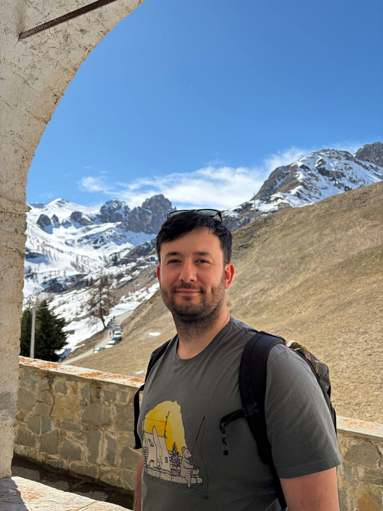

Matteo Bonini
I am an Associate Professor at the Department of Mathematical Sciences, Aalborg University, where I also hold the position of Orient’s Fond Chair Associate Professor.
My research is in algebraic coding theory, with emphasis on algebraic and geometric methods for the study of error-correcting codes and their applications.
I am broadly interested in algebraic-geometry codes, rank-metric and sum-rank codes, minimal and covering problems, and the study of permutations and perfect nonlinear functions over finite fields.
AAU profile | ORCID | LinkedIn | arXiv

My Research
I work on problems in algebraic coding theory at the interface of algebra, geometry, and combinatorics. A recurring theme in my research is the use of algebraic and geometric structures over finite fields to study the construction and structural properties of codes.
My work includes algebraic-geometry codes, rank-metric and sum-rank codes, minimal and covering codes, as well as questions related to permutations and perfect nonlinear functions over finite fields.
More details, including publications, can be found on the Research page.
Contact
Department of Mathematical Sciences
Aalborg University
Denmark
Email: mabo@math.aau.dk